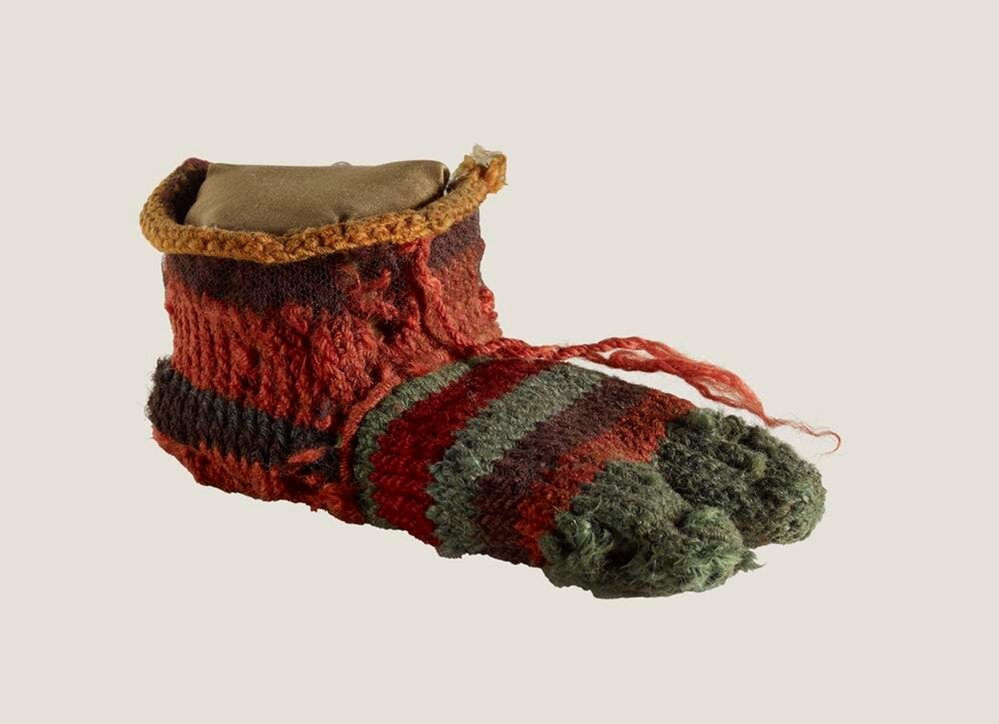

• Dép Hầu hết trẻ em và người lớn đều đi chân trần và không thường xuyên đi giày. Loại giày mà người Ai Cập cổ đại mang là sandal. Giống như đôi dép xỏ ngón bạn mang ngày nay. Người bình thường đi dép rơm. Những người giàu có hơn đi dép da, thường dành cho những dịp đặc biệt. Đây là một hình ảnh cho thấy sự khác biệt. Đôi dép rơm nhỏ bên trái là của trẻ em. Đôi dép bên phải được làm bằng da dành cho người lớn. Vào mùa đông, người Ai Cập mang tất để giữ ấm đôi chân
